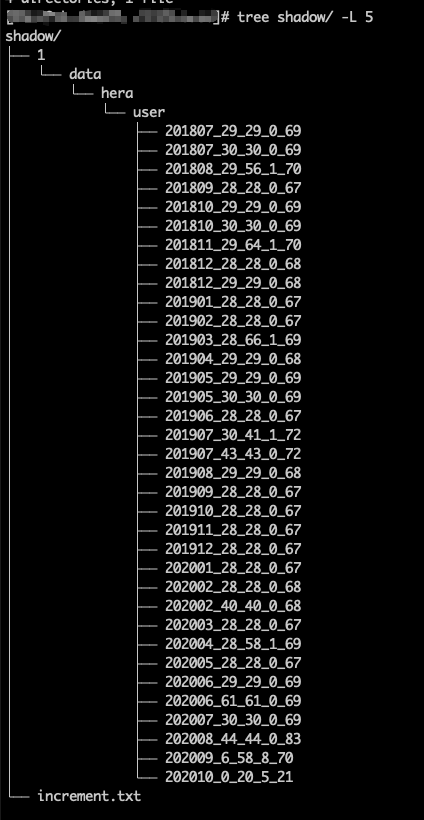

ClickHouse 重建 zookeeper 里的元数据(ClickHouse 恢复数据)
问题
今天在修改 ClickHouse 集群数据库表结构的时候 , 不知道由于什么原因 , 造成有两个节点 ( A 和 B , 其中 B 是副本节点 ) 的 zookeeper 的 metadata 数据不一致
每次在两个节点执行 alter table 的语句都会报 Metadata on replica is not up to date with common metadata in Zookeeper 错误
一开始的想法是把 A B 节点的 zookeeper 内的 columns 的值改成一样的就行了 . 没想到改了之后还是这个错 . 没办法 , 只能重建 zookeeper 上的 metadata 数据 (只重建出问题的表 , 其他的表不动)
注意 : 下面所有的操作没有特别的说明都是在 A 节点上进行的
备份数据
数据数据时有两个情况 :
ClickHouse 在运行中
关于
freeze具体的说明可以参考官方文档
ALTER TABLE $tab FREEZE
- 这个语句是在 ClickHouse 运行的情况下产生一份
$tab这个表的数据备份 - 备份的数据的数据在
$ck主目录/shadow/$N/data/....中 - 路径中的
$N是个变量 , 表示备份次数 , 如果是第一次运行那么值就是1
例如 :
alter table hera.user freeze;
运行上面的语句后 , 进入对应的目录运行 tree 命令看下结果

user 目录下就是备份的各个 partition 数据
ClickHouse 已经停止运行了
直接进入 data 目录把数据复制一份到其他目录
使用这种方式一定要确保 Clickhouse 已经停止运行 , 要不然备份的数据会有损坏的风险
恢复数据
建临时表
create table hera.temp (.....)
把上一步备份的数据转移到或复制到临时表的 detached 目录里
mv或cp /ck/shadow/1/data/hera/user/* /ck/data/hera/temp/detached
chown clickhouse:clickhouse -R /ck/data/hera/temp/detached
上面的第二行是确保 detacehd目录下的所有文件的用户和组是 clickhouse 要不然有权限问题
恢复 A 节点数据
cd /ck/data/hera/temp/detached
let i=1;for f in `ls -1` ; do echo $i $f;((i++)); echo "alter table hera.temp attach part '$f';"|clickhouse-client ; done
这一步是把备份的数据 attach 到 temp 表中
这一步完成后 A 节点的数据恢复就完成了
恢复 B 节点数据
在 B 节点上也建立一个临时表 , ClickHouse 自动会从 A 节点上拉取数据
扫尾工作
- 在 A B 节点上
drop掉zookeeper 不一致的表
drop table user
- 在 A B 节点上把 temp 表的名字修改为原表的名字
rename temp to user
参考
- 原文作者：Noel
- 原文链接：https://blog.18881888.xyz/post/2020.11.1_clickhouse-%E9%87%8D%E5%BB%BA-zookeeper-%E9%87%8C%E7%9A%84%E5%85%83%E6%95%B0%E6%8D%AE/
- 版权声明：本作品采用知识共享署名-非商业性使用-禁止演绎 4.0 国际许可协议进行许可，非商业转载请注明出处（作者，原文链接），商业转载请联系作者获得授权。